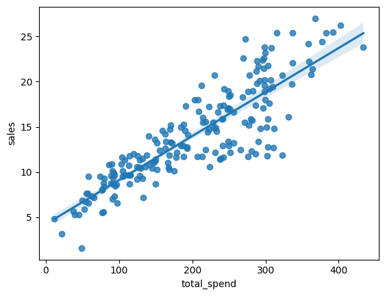

import numpy as np
import pandas as pd
import matplotlib.pyplot as plt
import seaborn as snsLINEAR REGRESSION
df = pd.read_csv('Advertising.csv')df.head()| TV | radio | newspaper | sales | |
|---|---|---|---|---|
| 0 | 230.1 | 37.8 | 69.2 | 22.1 |
| 1 | 44.5 | 39.3 | 45.1 | 10.4 |
| 2 | 17.2 | 45.9 | 69.3 | 9.3 |
| 3 | 151.5 | 41.3 | 58.5 | 18.5 |
| 4 | 180.8 | 10.8 | 58.4 | 12.9 |
df.info()<class 'pandas.core.frame.DataFrame'>
RangeIndex: 200 entries, 0 to 199
Data columns (total 4 columns):
# Column Non-Null Count Dtype
--- ------ -------------- -----
0 TV 200 non-null float64
1 radio 200 non-null float64
2 newspaper 200 non-null float64
3 sales 200 non-null float64
dtypes: float64(4)
memory usage: 6.4 KBdf['total_spend'] = df['TV'] + df['radio'] + df['newspaper']df.head()| TV | radio | newspaper | sales | total_spend | |
|---|---|---|---|---|---|
| 0 | 230.1 | 37.8 | 69.2 | 22.1 | 337.1 |
| 1 | 44.5 | 39.3 | 45.1 | 10.4 | 128.9 |
| 2 | 17.2 | 45.9 | 69.3 | 9.3 | 132.4 |
| 3 | 151.5 | 41.3 | 58.5 | 18.5 | 251.3 |
| 4 | 180.8 | 10.8 | 58.4 | 12.9 | 250.0 |
sns.scatterplot(data=df,x='total_spend',y='sales')<Axes: xlabel='total_spend', ylabel='sales'>sns.regplot(data=df,x='total_spend',y='sales')<Axes: xlabel='total_spend', ylabel='sales'>
X = df['total_spend']
y = df['sales']# y = mx + b
# y = B1x + B0
# help(np.polyfit)np.polyfit(x=X,y=y,deg=1)array([0.04868788, 4.24302822])potential_spend = np.linspace(1,500,100)preditec_sales = 0.04868788*potential_spend + 4.24302822sns.scatterplot(data=df,x='total_spend',y='sales')
plt.plot(potential_spend, preditec_sales,color='red')spend = 200
predicted_sales = 0.04868788*spend + 4.24302822
predicted_sales13.98060422np.polyfit(x=X,y=y,deg=3) # Equation of degree 3array([ 3.07615033e-07, -1.89392449e-04, 8.20886302e-02, 2.70495053e+00])# y = B1x + B0
# y = B3*x**3 + B2*x**2 + B1*x + B0potential_spend = np.linspace(0,500,100)pred_sales = 3.07615033e-07*potential_spend**3 + -1.89392449e-04*potential_spend**2 + 8.20886302e-02*potential_spend + 2.70495053sns.scatterplot(data=df,x='total_spend',y='sales')
plt.plot(potential_spend, pred_sales,color='red')